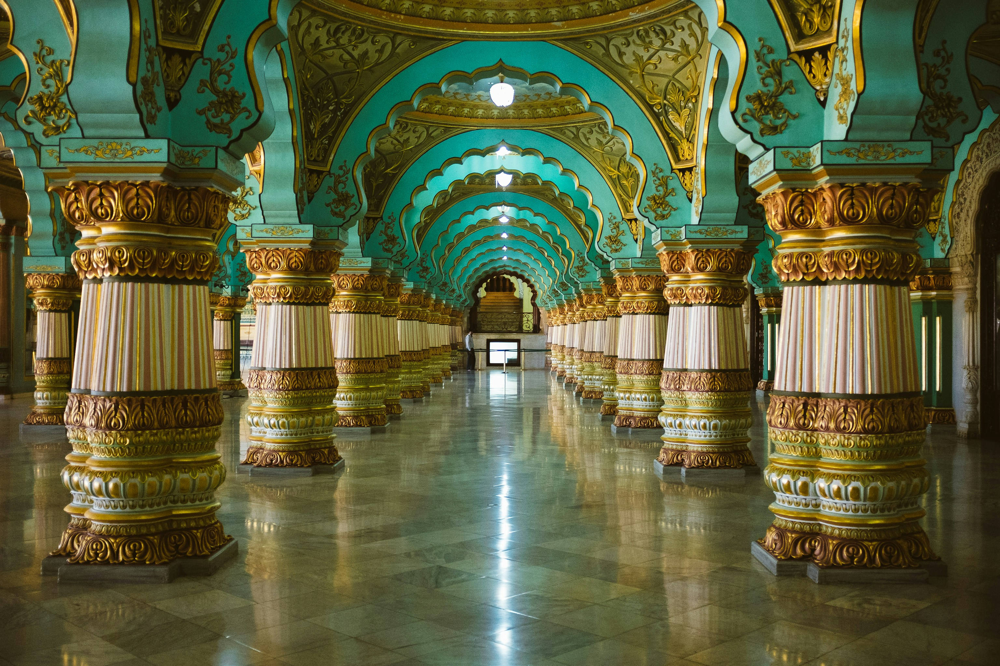

India is a fascinating travel destination known for its rich history, diverse cultures, colorful traditions, stunning landscapes, and delicious cuisine. From the snow-covered mountains of the Himalayas to the tropical beaches of Goa and Kerala, India offers something for every kind of traveler.
Visitors can explore magnificent historical sites such as the Taj Mahal, ancient forts and palaces in Rajasthan, and the temples of South India. Cities like Delhi, Mumbai,Jaipur, and Kolkata showcase a unique blend of tradition and modern life.
India is also famous for its festivals, yoga, Ayurveda, wildlife,handicrafts, and regional food. Travelers can experience everything from a peaceful houseboat ride in Kerala to a camel safari in the Thar Desert or a trek in the Himalayas.
What makes India especially memorable is its cultural diversity and warm hospitality. With its vast variety of experiences, landscapes, and traditions, India provides travelers with an opportunity to discover something new at every turn.
